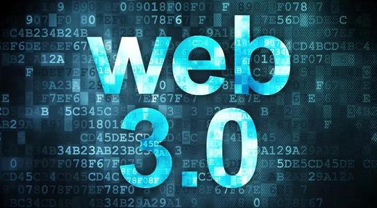
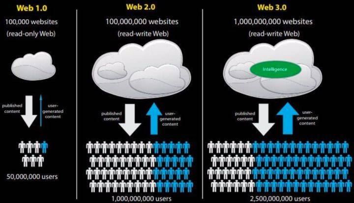
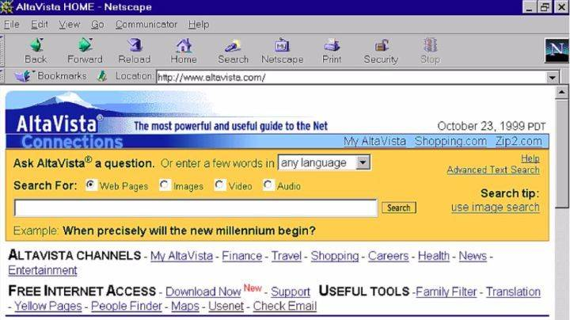
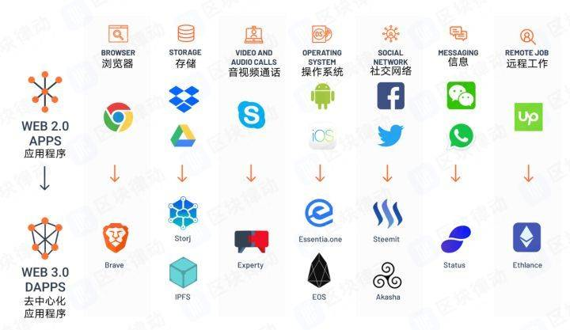
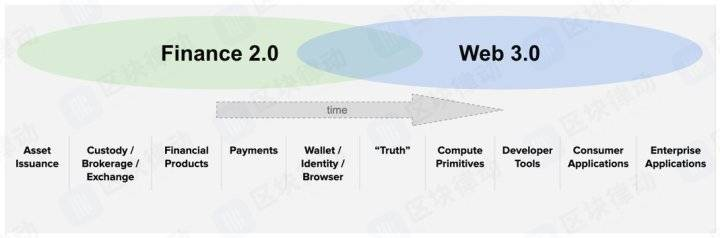
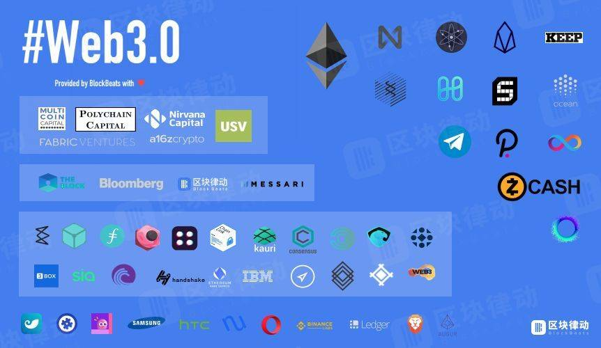

WEB3.0
从传统意义上来说，Web3.0 是互联网发展的新阶段。它基于现在的互联网（或者你可以叫他 Web 2.0），同时 Web3.0 带来的变化把互联网带入了一个全新的发展水平。计算机科学家和互联网专家认为，这些变化将使互联网变得更加智能，我们的生活也将变得更加容易。
Web 1.0 -> Web 2.0 -> Web 3.0: 不断进化
我们即将见证的趋势是，互联网将随着用户的需求和使用而发展，最终归于用户。

Web 1.0——网站投喂信息给用户

根据 BlockGeek 网站内容显示，早在上世纪 90 年代互联网刚刚开始普及的时候，用户与网络的互动处于非常早期的阶段，即用户只能被动地浏览文本、图片以及简单的视频内容，网站提供什么，用户查看什么。几乎没有互动可言。
对于 90 后、00 后来说，在社交媒体和视频流媒体盛行之前，曾经有过一个互联网（早期）版本！上世纪 90 年代中后期，在谷歌、百度发展之前的一段时间，互联网曾经由 AltaVista 和 Netscape 主宰。当时，互联网的存在只是为了宣传他们的实体公司。这些网站是“只读网站”，意味着你只能搜索和阅读信息。
而那个时代的电子商务网站实际上跟现在超市发的促销手册一样，只是给你展示内容，你无法在网站上下单。
这就是 Web1.0，缓慢的 Web 1.0，完全受控制的 Web 1.0。
Web 2.0——互联网开始与人互动
下一代互联网被称为“Web2.0”或“读写”网络。现在，用户不仅仅是单纯的访问者，还可以创建自己的内容，并将其上传到网站上。以著名的视频博主“办公室小野”为例，她仅用了 2 年的时间就从一个默默无闻的视频作者变成了月收入数千万的视频大 V。
有影响的网红只需要发一个视频就可以让一个餐馆排满长队，也可以用一句话让一家网店差评如潮。互联网人对于互联网的影响力与日俱增，以往网站给用户投喂信息的时代已经过去。
Web2.0 的主要目标是，使互联网更加民主，并尽可能地方便用户访问。
Web 3.0——更通人性的互联网
“Web1.0 主要由来自企业或机构为吸引其客户所产生的内容驱动。Web2.0 通过用户在网站上传和共享内容，让互联网进一步发展。Web 3.0 通过在线应用程序和网站接收互联网上的信息，向用户提供新的信息或者数据。”
比如语义网络，“我爱比特币（I love Bitcoin）”和“我<3 比特币（I <3 Bitcoin）”之间有什么区别？两个句子之间的语法不同，但语义相同。在我们这个例子中，语义处理数据所传达的意义或情感，使得这两个句子都表达了相同的情感。语义网和人工智能是 Web3.0 的两大基石。有了语义元数据，Web3.0 将增强数据之间的连接。因此，用户体验将发展到另一个连接水平，可以利用所有可用信息。
再比如人工智能，人工智能将通过网站过滤并尽可能向用户提供最好的数据。在目前的 Web2.0 中，我们已经开始采纳用户意见，帮助我们了解特定产品或资产的质量。一个像烂番茄（Rotten Tomatoes）这样的网站，用户可以在上面为电影投票打分。评分较高的电影通常被认为是“好电影”。这样的列表可以帮助我们获得“好数据”，而不必获得“坏数据”。
再比如高级的 3D 图像，想象一下在《第二人生（Second Life）》或《魔兽世界（World of Warcraft）》这样的在线游戏中，用户对在线角色的感兴趣程度远超过对真实自我的感兴趣程度。游戏《第二人生（Second Life）》的创始人 Philip Rosedale，相信虚拟身份将像电子邮件地址和手机一样流行。这种观点似乎有些牵强，但别忘了，在 20 年前的 1997 年，也只有少数人拥有自己的电子邮件地址。而未来拥有 3D 身份的人，将有可能越来越多。
最后，互联网将无处不在。我们已经在 Web2.0 中获得了这项功能。像 Instagram 这样的社交媒体网站，用户可以在相机上拍摄图像，然后在线上传和分发，从而成为的知识产权。因此，图像变得随处可见，也就是无所不在。移动设备和互联网接入的发展，将实现随时随地体验 Web 3.0。互联网将不再像 Web 1.0 只存在在桌面上，也不再像 Web 2.0 那样存在在智能手机上，它将是无所不在的。Web 3.0 也可以被称为无所不在的网络，因为你周围的大多数东西都是在线连接的，也就是物联网（Internet of Things）。
真正的 Web 3.0——由人来控制的互联网
从以上描述来看，Web 3.0 是一个更适合人类使用的互联网，它对人类的服务更加优秀且自然。但这意味着什么呢？这意味着用户需要将自己的信息大批量无偿地提供给人工智能和服务提供者，让他们训练 AI 模型来提供更好的推荐和语义关联，而无处不在的 Web 3.0 体验也将导致互联网用户隐私的消失，商家知道你是谁，知道你喜欢吃什么，而你对商家却知之甚少。
隐私、数据、权利、审查、身份……这都是区块链 Web 3.0 关心的话题。
在互联网科技前沿的数字加密货币行业里，圈内人士对于 Web 3.0 有着截然不同的看法。互联网早已千疮百孔，上面提到的 4 个属性只是互联网发展必然会经历的阶段，但并不足以构成 web 3.0。
真正的 Web 3.0 的几个特点
1、统一身份认证系统
2、数据确权与授权
3、隐私保护与抗审查
4、去中心化运行

Web 3.0 将带来透明、可信的互联网经济模式
因为用户已经免费使用了几十年的互联网内容，大家对于将个人数据通过《用户协议》和《隐私协议》的方式免费给网站、服务商使用的方法并不反感，甚至认为这是理所当然的事情。但我们忽略了，企业使用用户的数据赚到的钱，并不会返回给用户，在收入覆盖运营成本之后剩下的利润，用户无权获得。很多人觉得这理所当然，但这不公平。
无论是 Web 1.0 还是 Web 2.0，因为运营服务的中心化总是或多或少地带来透明度和信任的问题。这一问题可以通过数据权益通证化、数据确权与授权的区块链技术应用来得到解决。用户在 Web 3 的世界里产生的数据归用户所有，在没有得到用户的授权确认之前，使用者无权使用。同时由数据使用而产生的收益，用户也有可能通过数字加密货币行业的通证经济分一杯羹。
通证经济、数字资产的出现，也让用户得到了参与 Web 3.0 开发公司运行的机会，可以参与投票、参与分红，实现开发者与使用者的良性互动。用户既是使用者，又是维护者。比如区块律动 BlockBeats 之前推荐的 Brave 浏览器，当用户在浏览器内上网时，浏览器会推荐广告给读者，与此同时也会返还一部分收入给读者。既消费了用户的数据，又为用户创造了收入。未来会有更多这样的产品出现，让用户参与到公司的运营中。AVC 资本合伙人 Fred Wilson 认为，这种行为可以被理解为是 Open Data（开放数据），属于 Web 3.0 发展的一个重要环节。

文章开头提到的老王，因为参与了某个项目的挖矿，他的矿机被用来当作视频网站的 CDN 节点，给附近的视频用户传递视频文件，按照上传出去的流量来计算自己的工作量，再从优酷或者爱奇艺或者腾讯视频分钱。老王就是一个非常标准的 Web 3.0 的参与者，他可以享受互联网的便利，也能为自己的贡献行为赚钱。
Web 3.0 会让用户放心使用
在传统互联网领域，用户对于自己的数据的控制权利，其实非常低。
比如你发表在博客上的文章，可能因为新浪博客的一封“停止服务公告”而遭到删除。即便是你在网易云音乐上花钱买的版权音乐，也会因为网易云版权到期而被从 App 中删除，再也听不到。你心爱的游戏也有可能因为开发商赚不到钱而“已断开服务器连接”，让你花了几个月打得装备灰飞烟灭。
传统互联网领域，这一切都已经发生，而且还会发生更多。在 Web 3.0 时代，这个问题将通过去中心化解决。
像以太坊 2.0、Dfinity 等号称全球计算机的区块链将为开发者提供基础的计算服务，不需要再去租用服务器，用户的数据也可以通过 IPFS、Sia、OrbitDB（使用 IPFS 的去中心化数据库）等技术去中心化存储，没有人能再控制你的数据。只要你愿意为游戏运行的区块链智能合约付费，即便整个游戏就只剩下你一个人，你仍然可以玩。
产品和游戏的改动也得经过社区投票才能通过，开发者不再有独裁的权利。以太坊创始人 Vitalik Buterin 就因为网络游戏《魔兽世界》随意修改角色技能而对此大动肝火，Web 3.0 的出现将限制这种情况的发生。
Web 3.0 很无情但可以异常地公平
Web 3.0 实际上是冷冰冰的，它不会带感情，只有这样它才能为所有人忠诚地服务。
Web 3 在金融领域的应用也将超越我们对目前金融行业的想象，而且已经落地。以去中心化借贷平台为例，在这个平台上用户可以通过超额抵押数字资产来获得锚定美元的稳定币 DAI。
区块链和智能合约没有感情，它对所有人一视同仁，它只认链上记在的不可篡改的记录以及实实在在的数字资产。
当你走进银行的时候，银行要审查你的资质，查你的资金来源，然后经过漫长的审查后再那你的抵押物给你贷款；而在 Web 3.0 的 Defi（去中心化金融）里，没有那么一个中心化的机构来对比进行审查，无论是你一个被赶出家门的流浪汉，还是一个身穿西装的华尔街大佬，部署在以太坊区块链上 MakerDAO 智能合约都将无条件地接收你的数字资产并将稳定币借给你。
现实世界中，你或许可以通过花言巧语取得别人的信任，而 Web 3.0 不听这一套。它是没有感情的机器，它不会骗人，也无法被人骗，同样在区块链上做生意，也可以几乎“去信任”。这种行为又被 Fred Wilson 称为开放金融（open finance）。
Web 3.0 效率低、普及难度大
但不可否认，新的 Web 3.0 世界存在很重大的问题：低效。这与区块链从业者们认可的 Web 3.0 去中心化运行有直接关系，去中心化的效率相较于中心化的 Web 2.0 和传统意义上的 Web 3.0 来说，都要低的很多。
首先是去中心化网络对于任务处理的速度低下，这一点我们认为，任何区块链行业的从业者都会表示认可，即便是那些号称 Web 级的区块链项目也无法掩盖效率低的事实；然后是使用去中心化网络需要支付的隐性成本，进入 Web 3.0 的用户都会被“手续费”概念给弄糊涂，原本的互联网根本不存在手续费这件事。
Web 3.0 要对用户科普的内容要远远超过区块链、比特币、加密货币要科普的知识。当然，开发者也可以通过多样的设计将应用程序设计的和传统 App 无异，让用户根本感觉不到这些复杂的运行机制的存在。但这类开发工具，才刚刚起步。
Web 3.0 的普及难度可能很大，无论是对开发者的普及，还是对用户的普及，还是对企业的普及，都将异乎常规的难。尤其是在如今全球各个国家和地区都试图加强互联网监管的时代，Web 3.0 正在与政客们进行对抗。
再加上通证经济和人性自私，炒币远比做项目赚钱。为了取得大众信任，开发团队甚至需要定期露面来证明自己还在工作。如何把区块链运行得跟传统互联网一样，同时又能保持区块链的特性，是目前区块链开发者们仍在头疼和探索的难题。

Web 3.0 是否值得存在
这是绝大多数反对 Web 3.0 概念的声音。如今的互联网已经发展到了几乎完善的阶段，用户已经习惯了出售数据，习惯了订阅制度，习惯了这一切后就不愿意再进入 Web 3.0 世界。
对此，Web 3.0 这个概念没有存在的必要，因为现在已经进入了 Web 3.0 阶段。从用户接受的角度来看，Web 3.0 似乎是没有什么存在的必要，因为如今的互联网已经可以满足所有人的需求。
但是从去中心化以及个人权益保护的角度来看，Web 3.0 有它的价值。但它的价值能多大，需要等待市场去检验。这可能需要很长时间。从数字加密货币市场角度思考的 Web 3.0 有它存在的必要，但它的存在是否值得我们花时间去等待，又是另外一回事了。
可以肯定的是，无论是开发者、区块链运营者还是用户，Web 3.0 不再像 Web 2.0 一样只需要等待就能享受，只有主动地参与才能够创造这么一个真正享受权利和值得旅行义务的新互联网世界。